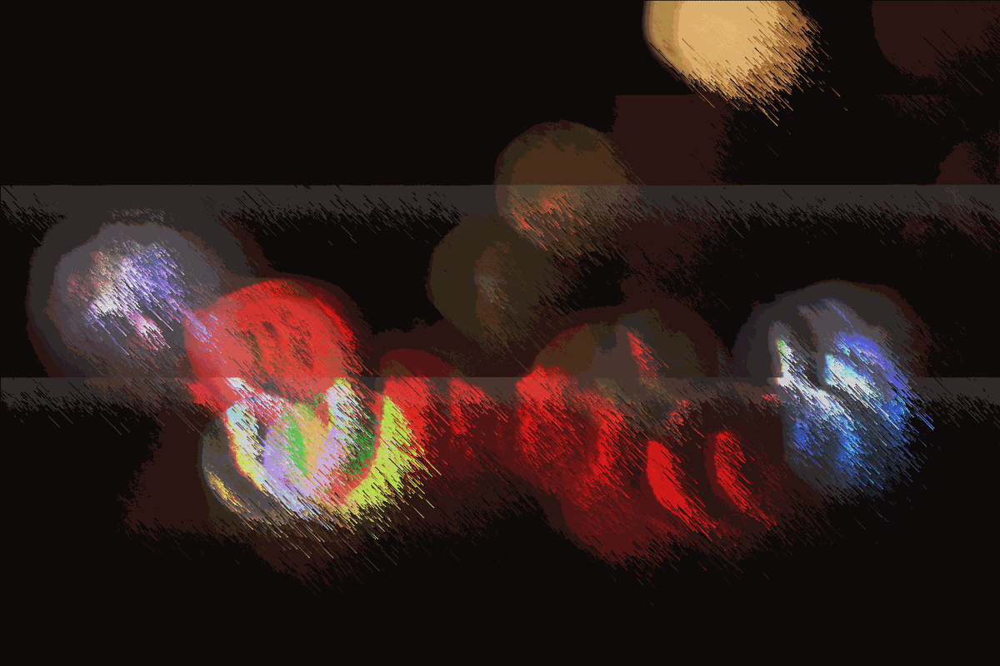
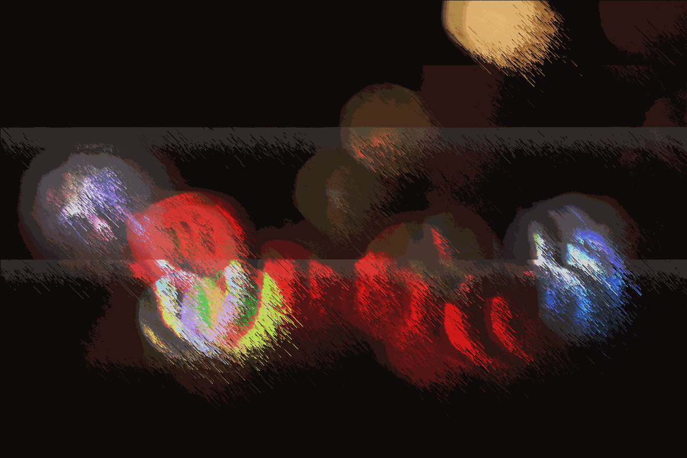

niks božović /
audio-vizuelna instalacija glitches in reality, se bavi efektom kapitalizma i konzumerizma na naše gradove, kao i na nas same. kapitalizam nas davi prevelikim brojem reklama i svetlošću koja naizgled dolazi sa svih strana. sve ovo postaje jako zagušljivo za žrtve kapitalizma. ova instalacija prikazuje noćna svetla u jednom novom stanju, pogrešnom, izmenjenom, zazornom.
fotografije na kojima je bazirana ova instalacija su originalno predstavljene kao defokusirana svetla, koje sam potom ubacila u audacity i dodala reverb efekat koji ponavlja elemente fotografije i čini još očitijim greške u današnjem društvu. ova tehnika se zove datamoshing, tj. ubacivanje fotografija i/ili video snimaka u program koji nije namenjen toj svrsi, u ovom slučaju programu za obradu zvuka. nakon ovoga su fotografije pretvorene u kratke animacije koje se ponavljaju u programu za pixelsorting, tj. tehniku gde se pojedinačni pikseli u fotografiji pomeraju za određeni broj piksela. za zvučni element instalacije sam iskoristila soundscape koji nastaje ubacivanjem ovih fotografija u audacity.
ova krajnje eksperimentalna tehnika je dovela do boljeg prikaza grešaka današnjeg društva u kojem vlada konzumerizam, a istovremeno predstavlja šansu da izmenimo današnje društvo i na taj način predstavlja poziv na akciju protiv kapitalističkog društva. mark fišer je u svom delu capitalist realism rekao da je lakše zamisliti kraj sveta nego kraj kapitalizma. ova instalacija nam daje taj izlaz iz kapitalizma u novi, izmenjen svet. /
instagram


 
